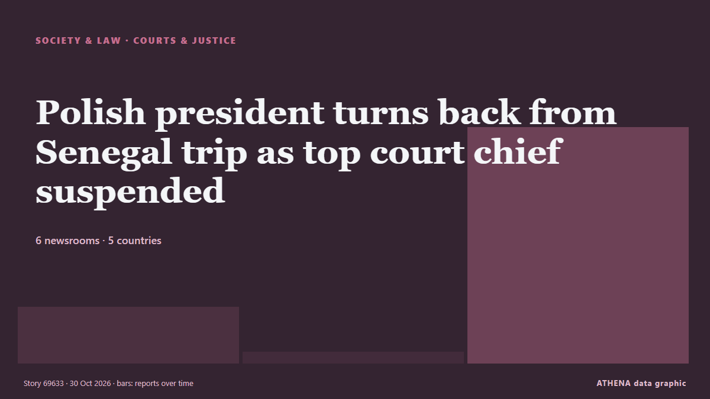

Justice et tribunaux
| 17 oct. | 0 |
|---|---|
| 18 oct. | 0 |
| 19 oct. | 1 |
| 20 oct. | 0 |
| 21 oct. | 0 |
| 22 oct. | 0 |
| 23 oct. | 1 |
| 24 oct. | 1 |
| 25 oct. | 0 |
| 26 oct. | 1 |
| 27 oct. | 5 |
| 28 oct. | 7 |
| 29 oct. | 3 |
| 30 oct. | 3 |
Les titres sont affichés en anglais, tels que publiés.

Polish president turns back from Senegal trip as top court chief suspended
WARSAW, Oct 30 - Polish President Karol Nawrocki turned back his plane en route to Senegal on Friday after police entered the premises of Poland's top court and its president was suspended. de The Straits Times
Abu Dhabi court jails 8 for life over arms supplies to Sudanese Army
Yasser Al Atta, Salah Gosh, Othman Al Zubair, five others sentenced to life imprisonment in arms trafficking, money laundering case. de Gulf News
Sheikh Hasina's Regime Change Was Planned Days Before Her Ouster: Yunus Aide
Hasina has accused the Yunus administration of allowing perpetrators of violence to escape accountability while pursuing politically motivated cases against Awami League members. de NDTV
Russell Brand denies all charges as he testifies at his rape and sex assault trial
The British actor-comedian acknowledged in a London court on Wednesday that he had been obsessed with sex as a younger man, but denied multiple charges of rape and sexual assault, saying the claims… de PBS NewsHour
Hong Kong leader apologizes for deadly Tai Po fire, pledges reforms
Hong Kong leader John Lee apologized on Thursday for the deadly blaze that killed 168… de BusinessWorld
Armenia justice minister: We will be ready to present new draft constitution in mid-November
ArmInfo. The text of the new Constitution of Armenia will be published in November. de Arminfo
ATC sentences Imaan, Hadi to 10 years in security breach case
ISLAMABAD: An anti-terrorism court on Thursday sentenced human rights lawyer Imaan Zainab Mazari-Hazir and her husband, Hadi Ali Chattha, to 10 years in prison each in the security breach case. de Dawn
Three French nationals jailed for life in Iraq for Islamic State ties
BAGHDAD, Oct 29 - Three French nationals were sentenced to life in prison in Iraq on Thursday for belonging to Islamic State, with their lawyers and French embassy representatives present at the… de The Straits Times
92-year-old US judge handling Maduro case dies
His death was confirmed by an official at the United States District Court, Southern District of New York, where he presided. de Channels TV
🔴 Suspect in deadly shooting near Paris admits racist intent, French anti-terrorism prosecutor says
A shooter suspected of killing one person and wounding five others last week in the town of Trappes, near Paris, is set to be held in pre-trial detention and will appear before judges on Thursday… de France 24 English
Special counsel again seeks death penalty for ex-President Yoon over martial law declaration
SEOUL, Oct. 29 (Yonhap) -- A special counsel team on Thursday sought the death p... de Yonhap (English)
From King Edward III To Neha Bora, A 1361 Law Lives On In 'Peace Bonds': NDTV Explains
CJP leaders Abhijeet Dipke, Saurav Das, and Ashutosh Ranka signed peace bonds; two of them even faced jail over an alleged breach, while AISA's Neha Bora questioned such a bond's very logic. de NDTV
Iran court sentences award-winning filmmaker Jafar Panahi to 5 years in prison
The 66-year-old won the top prize in the 2025 Cannes film festival for It Was Just An Accident. de The Straits Times
US judge narrows Macrons' defamation lawsuit against American podcaster
A judge in the United States has ruled that French President Emmanuel Macron and his wife, Brigitte, could continue their defamation lawsuit against the companies of the American podcaster Candace… de RFI English
Sinai Monastery Deal Nears Breakthrough with Egypt
A proposed agreement between Egypt and Saint Catherine’s Monastery in Sinai is nearing a breakthrough, with Archbishop Symeon preparing to signal his acceptance amid pending Greek court proceedings. de Greek City Times
Man sentenced to life imprisonment over drug trafficking charges
KUWAIT CITY: Kuwait’s Criminal Court has sentenced two Kuwaiti citizens to life imprisonment and fined each KD 100,000 for drug trafficking and smuggling narcotics by sea.The court... de Arab Times
FIFA plans US$ 25 million support for Sri Lankan football development
FIFA is planning to provide approximately US$25 million in support for Sri Lankan football over the next four-year cycle, with infrastructure development, youth programmes and improvements to the… de Daily Mirror
Ishan Kishan ruled out of India’s 3rd T20I vs New Zealand
Dubai: Vaibhav Sooryavanshi could get another opportunity to represent India in the second T20I against New Zealand after Ishan Kishan suffered a groin niggle, batting coach Sitanshu Kotak confirmed. de Gulf News
EU prosecutors still have questions for von der Leyen over Pfizergate
Little demonstrable progress has been made on the EPPO's probe into the Commission chief's negotiations on Covid-19 vaccines with Pfizer CEO Albert Bourla. de Politico Europe